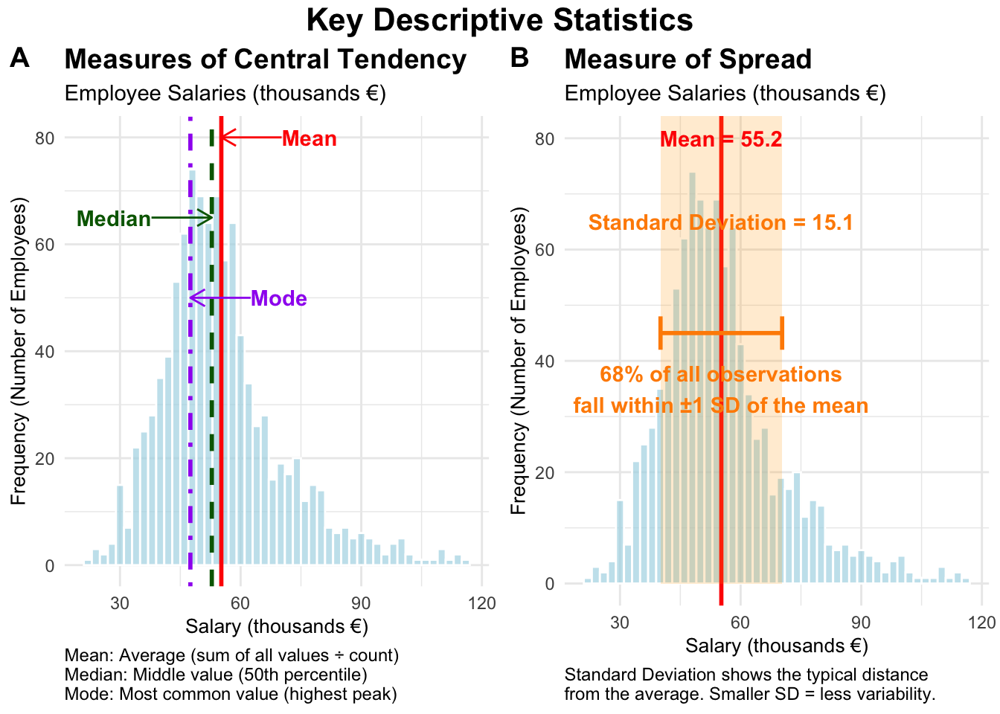
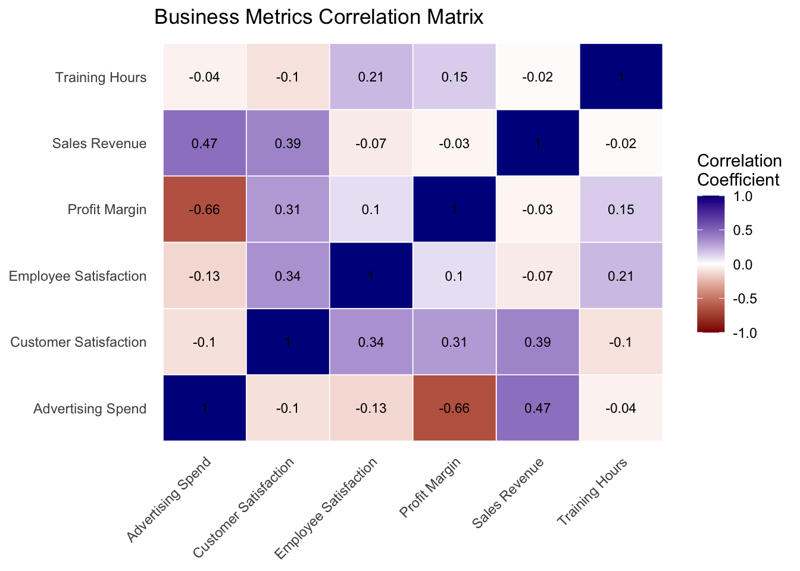
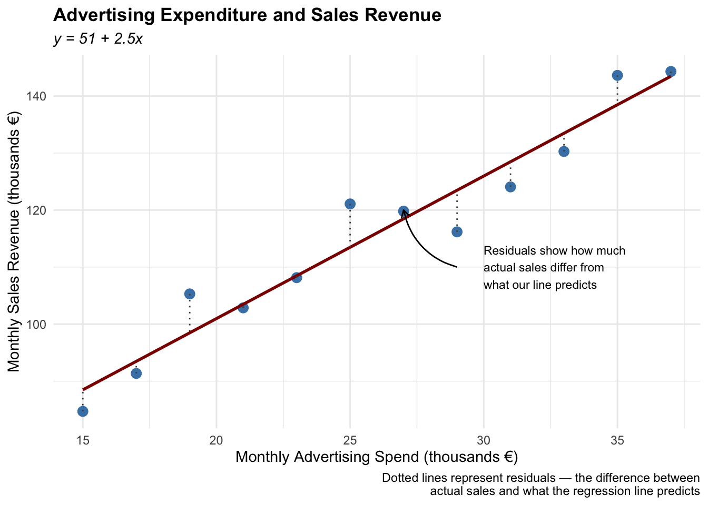
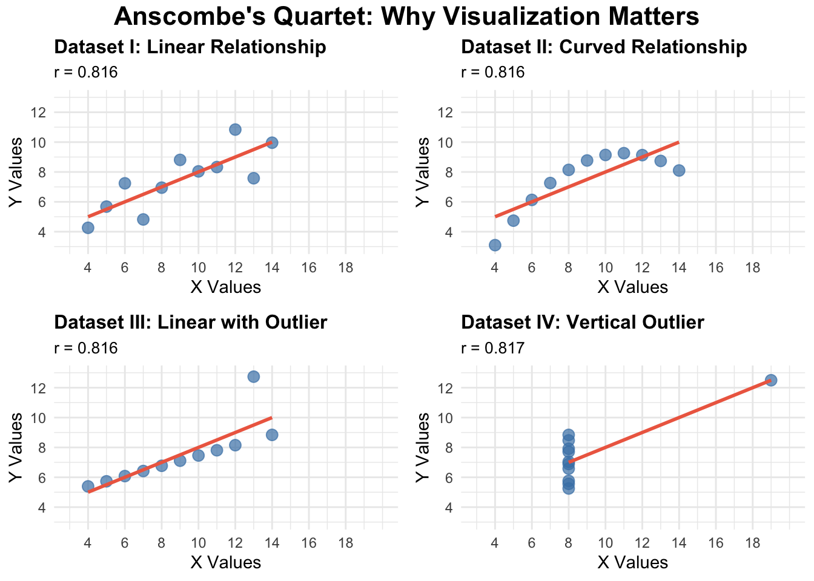

Packages used in R examples
library(dplyr)
library(tidyr)
library(stringr)
library(ggplot2)
library(ggpubr)
library(knitr)Claudius Gräbner-Radkowitsch
June 15, 2026
June 15, 2026
This page is part of the Statistics Recap track.
Previous resource: Data Fundamentals: Types, Scales, and Notation
Next resource: Essentials of Probability Theory for Statistics
Descriptive statistics help us understand and summarize the key characteristics of our dataset. Think of them as a set of tools that allow us to paint a clear picture of what our data looks like without getting lost in the individual data points. Just as a painter might capture the essence of a landscape rather than documenting every blade of grass, descriptive statistics capture the essential features of our data.
To this end we can use a variety of measures, which are often grouped into the following categories:
We go through these categories one by one below.
Measures of central tendency tell us where the “center” of our data lies. The left panel in Figure 1 illustrates the following measures using a synthetic salary dataset.
The Mean is what most people think of as the average. You add up all values and divide by the number of observations. The mean is like the balancing point of your data — if you imagine your data points as weights on a seesaw, the mean is where you’d place the fulcrum to balance it perfectly.
The mean is particularly useful when your data is normally distributed (bell-shaped), but it can be heavily influenced by extreme values (outliers). For example, if most employees in a company earn around €45,000 annually, but the CEO earns €500,000, the mean salary will be pulled upward by this outlier.
The Median is the middle value when your data is arranged in order. Unlike the mean, the median is not affected by extreme values, making it more robust when dealing with skewed data or outliers.
If you have employee satisfaction scores of 3.2, 3.5, 3.8, 4.1, and 4.9, the median is 3.8. Even if that last score were 1.0 instead of 4.9, the median would still be 3.5.
The Mode is the value that appears most frequently in your dataset. In some datasets there might be no mode (if all values appear equally often) or multiple modes.
In a dataset of customer purchase categories where “electronics” appears 150 times, “clothing” appears 89 times, and “books” appears 112 times, “electronics” is the mode.
salaries <- c(35, 38, 42, 45, 48, 52, 55, 58, 62, 120)
mean_salary <- mean(salaries)
median_salary <- median(salaries)
get_mode <- function(x) {
unique_x <- unique(x)
unique_x[which.max(tabulate(match(x, unique_x)))]
}
departments <- c("Sales", "IT", "Sales", "Marketing", "IT", "Sales", "HR", "IT", "Sales")
mode_dept <- get_mode(departments)set.seed(123)
employee_data <- data.frame(
department = rep(c("Sales", "IT", "Marketing"), each = 10),
salary = c(
rnorm(10, mean = 45, sd = 5),
rnorm(10, mean = 55, sd = 8),
rnorm(10, mean = 48, sd = 6)
)
)
dept_summary <- employee_data |>
group_by(department) |>
summarise(
mean_salary = round(mean(salary), 2),
median_salary = round(median(salary), 2),
.groups = "drop"
)set.seed(123)
data1 <- rnorm(800, mean = 50, sd = 10)
data2 <- rnorm(200, mean = 75, sd = 15)
values <- c(data1, data2)
df <- data.frame(values = values)
data_mean <- mean(values)
data_median <- median(values)
data_sd <- sd(values)
hist_data <- hist(values, plot = FALSE, breaks = 30)
mode_bin <- hist_data$mids[which.max(hist_data$counts)]
lower_sd <- data_mean - data_sd
upper_sd <- data_mean + data_sd
common_theme <- theme_minimal() +
theme(
plot.title = element_text(face = "bold", size = 14),
plot.subtitle = element_text(size = 11),
axis.title = element_text(size = 10)
)
note_distance <- 15
central_tendency_plot <- ggplot(df, aes(x = values)) +
geom_histogram(binwidth = 2, fill = "lightblue", color = "white", alpha = 0.7) +
geom_vline(xintercept = data_mean, color = "red", linewidth = 1.0, linetype = "solid") +
geom_vline(xintercept = data_median, color = "darkgreen", linewidth = 1.0, linetype = "dashed") +
geom_vline(xintercept = mode_bin, color = "purple", linewidth = 1.0, linetype = "dotdash") +
annotate("text", x = data_mean + note_distance, y = 80, label = "Mean",
color = "red", fontface = "bold", hjust = 0) +
annotate("text", x = data_median - note_distance, y = 65, label = "Median",
color = "darkgreen", fontface = "bold", hjust = 1) +
annotate("text", x = mode_bin + note_distance, y = 50, label = "Mode",
color = "purple", fontface = "bold", hjust = 0) +
annotate("segment", x = data_mean + note_distance, xend = data_mean, y = 80, yend = 80,
arrow = arrow(length = unit(0.3, "cm")), color = "red") +
annotate("segment", x = data_median - note_distance, xend = data_median, y = 65, yend = 65,
arrow = arrow(length = unit(0.3, "cm")), color = "darkgreen") +
annotate("segment", x = mode_bin + note_distance, xend = mode_bin, y = 50, yend = 50,
arrow = arrow(length = unit(0.3, "cm")), color = "purple") +
labs(
title = "Measures of Central Tendency",
subtitle = "Employee Salaries (thousands €)",
x = "Salary (thousands €)", y = "Frequency (Number of Employees)",
caption = "Mean: Average (sum of all values ÷ count)\nMedian: Middle value (50th percentile)\nMode: Most common value (highest peak)"
) +
common_theme +
theme(plot.caption = element_text(hjust = 0, size = 9))
dispersion_plot <- ggplot(df, aes(x = values)) +
geom_histogram(binwidth = 2, fill = "lightblue", color = "white", alpha = 0.7) +
geom_vline(xintercept = data_mean, color = "red", linewidth = 1.0, linetype = "solid") +
annotate("rect", xmin = lower_sd, xmax = upper_sd, ymin = 0, ymax = Inf, alpha = 0.2, fill = "orange") +
annotate("text", x = data_mean, y = 80, label = paste("Mean =", round(data_mean, 1)),
color = "red", fontface = "bold") +
annotate("text", x = data_mean, y = 65,
label = paste("Standard Deviation =", round(data_sd, 1)), color = "darkorange", fontface = "bold") +
annotate("segment", x = lower_sd, xend = upper_sd, y = 45, yend = 45, linewidth = 1.0, color = "darkorange") +
annotate("segment", x = lower_sd, xend = lower_sd, y = 42, yend = 48, linewidth = 1.0, color = "darkorange") +
annotate("segment", x = upper_sd, xend = upper_sd, y = 42, yend = 48, linewidth = 1.0, color = "darkorange") +
annotate("text", x = data_mean, y = 35,
label = "68% of all observations\nfall within ±1 SD of the mean", color = "darkorange", fontface = "bold") +
labs(
title = "Measure of Spread",
subtitle = "Employee Salaries (thousands €)",
x = "Salary (thousands €)", y = "Frequency (Number of Employees)",
caption = "Standard Deviation shows the typical distance\nfrom the average. Smaller SD = less variability."
) +
common_theme +
theme(plot.caption = element_text(hjust = 0, size = 9))
final_plot <- annotate_figure(
ggarrange(central_tendency_plot, dispersion_plot, ncol = 2, labels = c("A", "B")),
top = text_grob("Key Descriptive Statistics", face = "bold", size = 16)
)
print(final_plot)
While measures of central tendency tell us where our data is centered, measures of dispersion tell us how spread out our data is (see the right panel in Figure 1). Two datasets can have the same mean but very different patterns of spread.
Range is the simplest measure — the difference between the maximum and minimum values. It only considers the two extreme values and ignores everything in between.
Variance measures how much individual data points deviate from the mean, on average. We square the differences to ensure positive and negative deviations don’t cancel each other out.
Standard Deviation is the square root of the variance. Its great advantage is that it is expressed in the same units as your original data, making it more interpretable than variance.
If the mean monthly revenue is €100,000 and the standard deviation is €15,000, you can think of most months generating revenue within about €15,000 of the average.
The Coefficient of Variation (CV) standardizes variability relative to the mean, making it possible to compare spread across variables measured on different scales. It is calculated as the standard deviation divided by the mean, often expressed as a percentage.
Imagine comparing monthly sales revenue (measured in thousands of euros) and customer satisfaction scores (measured on a 1–5 scale). Sales might have a standard deviation of €15,000 with a mean of €100,000, while satisfaction might have a standard deviation of 0.3 with a mean of 3.8. Without the CV, these numbers are difficult to compare directly.
monthly_sales <- c(85000, 92000, 78000, 105000, 88000, 94000, 110000, 87000, 96000, 150000)
customer_satisfaction <- c(3.8, 4.1, 3.9, 4.2, 3.7, 4.0, 4.3, 3.6, 4.1, 3.9)
sales_cv <- (sd(monthly_sales) / mean(monthly_sales)) * 100 # ~21%
satisfaction_cv <- (sd(customer_satisfaction) / mean(customer_satisfaction)) * 100 # ~5%set.seed(123)
quarterly_data <- data.frame(
quarter = rep(c("Q1", "Q2", "Q3", "Q4"), each = 6),
revenue = c(
rnorm(6, mean = 180, sd = 20),
rnorm(6, mean = 195, sd = 15),
rnorm(6, mean = 210, sd = 25),
rnorm(6, mean = 185, sd = 18)
)
)
quarterly_summary <- quarterly_data |>
group_by(quarter) |>
summarise(
mean_revenue = round(mean(revenue), 2),
std_dev_revenue = round(sd(revenue), 2),
cv_percent = round((sd(revenue) / mean(revenue)) * 100, 1),
.groups = "drop"
)When we have two variables, we often want to understand whether they move together or independently.
Covariance measures whether two variables tend to move in the same direction. If both variables tend to be above their respective means together, covariance will be positive. However, covariance has a significant limitation: its magnitude depends on the scale of measurement, making it difficult to interpret.
Correlation is essentially standardized covariance, ranging from −1 to +1. A correlation of +1 indicates a perfect positive relationship, −1 a perfect negative relationship, and 0 no linear relationship.
There are two primary correlation coefficients:
Pearson correlation measures linear relationships and works best with normally distributed continuous data. It assesses how well data points fit along a straight line. This is the standard “correlation” most people reference when analyzing financial metrics or other continuous business variables.
Spearman correlation measures monotonic relationships — whether variables consistently move in the same direction, regardless of whether that movement is linear. This makes it ideal for ordinal data and relationships that might be curved rather than linear.
In practice, use Pearson for financial metrics that follow normal patterns and linear relationships. Choose Spearman for survey data, when you have outliers, or when you suspect non-linear relationships.
set.seed(123)
advertising_spend <- seq(10, 100, by = 5)
sales_revenue <- advertising_spend * 2.5 + rnorm(19, mean = 0, sd = 15) + 50
covariance_value <- cov(advertising_spend, sales_revenue)
cor_pearson <- cor(advertising_spend, sales_revenue, method = "pearson")
cor_spearman <- cor(advertising_spend, sales_revenue, method = "spearman")When working with multiple variables simultaneously, correlation matrices show the correlation between every pair of variables in your dataset. The diagonal always contains 1s (every variable is perfectly correlated with itself) and the matrix is symmetric.
When interpreting correlation matrices, look for:
set.seed(123)
business_metrics <- data.frame(
advertising_spend = rnorm(100, mean = 50, sd = 15),
customer_satisfaction = rnorm(100, mean = 3.8, sd = 0.5),
employee_satisfaction = rnorm(100, mean = 3.5, sd = 0.6),
training_hours = rnorm(100, mean = 25, sd = 8)
) |>
mutate(
sales_revenue = 100 + 1.2 * advertising_spend + 30 * customer_satisfaction + rnorm(100, 0, 20),
customer_satisfaction = customer_satisfaction + 0.3 * employee_satisfaction + rnorm(100, 0, 0.2),
employee_satisfaction = employee_satisfaction + 0.02 * training_hours + rnorm(100, 0, 0.15),
profit_margin = 15 + sales_revenue * 0.1 - advertising_spend * 0.5 +
customer_satisfaction * 2 + rnorm(100, 0, 5),
customer_satisfaction = pmax(1, pmin(5, customer_satisfaction)),
employee_satisfaction = pmax(1, pmin(5, employee_satisfaction))
)
correlation_matrix <- cor(business_metrics)correlation_matrix |>
as.data.frame() |>
mutate(var1 = rownames(correlation_matrix)) |>
pivot_longer(cols = -var1, names_to = "var2", values_to = "correlation") |>
mutate(
var1_clean = case_when(
var1 == "advertising_spend" ~ "Advertising Spend",
var1 == "customer_satisfaction" ~ "Customer Satisfaction",
var1 == "employee_satisfaction" ~ "Employee Satisfaction",
var1 == "training_hours" ~ "Training Hours",
var1 == "sales_revenue" ~ "Sales Revenue",
var1 == "profit_margin" ~ "Profit Margin",
TRUE ~ var1
),
var2_clean = case_when(
var2 == "advertising_spend" ~ "Advertising Spend",
var2 == "customer_satisfaction" ~ "Customer Satisfaction",
var2 == "employee_satisfaction" ~ "Employee Satisfaction",
var2 == "training_hours" ~ "Training Hours",
var2 == "sales_revenue" ~ "Sales Revenue",
var2 == "profit_margin" ~ "Profit Margin",
TRUE ~ var2
)
) |>
ggplot(aes(x = var2_clean, y = var1_clean, fill = correlation)) +
geom_tile(color = "white", linewidth = 0.3) +
geom_text(aes(label = round(correlation, 2)), color = "black", size = 3) +
scale_fill_gradient2(low = "darkred", mid = "white", high = "darkblue",
midpoint = 0, limit = c(-1, 1), name = "Correlation\nCoefficient") +
theme_minimal() +
theme(axis.text.x = element_text(angle = 45, hjust = 1),
axis.title = element_blank(), panel.grid = element_blank()) +
labs(title = "Business Metrics Correlation Matrix")
While often associated with predictive modeling, regression also serves as a powerful descriptive tool. Think of regression as drawing the “best-fit line” through scattered data points — a mathematical equation that summarizes the relationship between variables.
The most common form, linear regression, is written as:
\[y = \beta_0 + \beta_1 \boldsymbol{x}_1\]
where \(\beta_0\) represents the y-intercept and \(\beta_1\) represents the slope coefficient. For multiple regression with several predictors:
\[y = \beta_0 + \beta_1 \boldsymbol{x}_1 + \beta_2 \boldsymbol{x}_2 + \ldots + \beta_k \boldsymbol{x}_k\]
Each \(\beta\) coefficient describes how \(y\) changes when the corresponding predictor variable changes by one unit, holding all other variables constant. Unlike correlation, which only indicates strength and direction, regression coefficients provide interpretable measures of how variables actually relate to each other in your data.
Example: Consider a marketing manager analyzing the relationship between monthly advertising spend and sales revenue. Figure 2 shows a regression based on: \[\text{sales} = \beta_0 + \beta_1 \cdot \text{advertising}\] The coefficient \(\hat{\beta}_1\) (approximately 2.5) provides a clear descriptive measure: for each additional thousand euros spent on advertising, monthly sales revenue increase on average by about €2,500. The intercept \(\hat{\beta}_0\) of around 50 represents the theoretical sales revenue when advertising spend is zero — though this value often has less practical interpretation.
The dotted lines — representing residuals — show the “misses” between what our regression line predicts and the actual sales values. As a descriptive tool, this regression cannot claim that advertising directly causes sales increases. It simply summarizes the historical relationship in a quantifiable way.
set.seed(123)
advertising_spend <- seq(15, 37, by = 2)
sales_revenue <- 50 + 2.5 * advertising_spend + rnorm(12, 0, 5)
marketing_data <- data.frame(
month = month.abb[1:12],
advertising_spend = advertising_spend,
sales_revenue = sales_revenue
)
model <- lm(sales_revenue ~ advertising_spend, data = marketing_data)
beta0 <- coef(model)[1]
beta1 <- coef(model)[2]
marketing_data$fitted <- fitted(model)
marketing_data$residuals <- residuals(model)ggplot(marketing_data, aes(x = advertising_spend, y = sales_revenue)) +
geom_point(size = 3, color = "steelblue") +
geom_smooth(method = "lm", se = FALSE, color = "darkred") +
geom_segment(aes(xend = advertising_spend, yend = fitted), linetype = "dotted", color = "gray30") +
labs(
title = "Advertising Expenditure and Sales Revenue",
subtitle = paste0("y = ", round(beta0, 1), " + ", round(beta1, 2), "x"),
x = "Monthly Advertising Spend (thousands €)",
y = "Monthly Sales Revenue (thousands €)",
caption = "Dotted lines represent residuals — the difference between\nactual sales and what the regression line predicts"
) +
annotate("text", x = 30, y = 110,
label = "Residuals show how much\nactual sales differ from\nwhat our line predicts", size = 3, hjust = 0) +
annotate("curve", x = 29, y = 110, xend = 27, yend = 120,
arrow = arrow(length = unit(0.2, "cm")), curvature = -0.3) +
theme_minimal() +
theme(plot.title = element_text(face = "bold"), plot.subtitle = element_text(face = "italic"))
The power of descriptive statistics is greatly enhanced when combined with appropriate visualizations. Charts and graphs can reveal patterns that numbers alone might hide.
A famous example is Anscombe’s quartet, shown in Figure 3. The four datasets have nearly identical descriptive statistics (see Table 1), but are in fact very different. This demonstrates why you should always visualize your data and never rely on summary statistics alone.
anscombe_long <- anscombe |>
mutate(observation = row_number()) |>
pivot_longer(cols = -observation, names_to = "variable", values_to = "value") |>
mutate(
dataset = str_extract(variable, "\\d+"),
axis = str_extract(variable, "[xy]"),
dataset = paste("Dataset", dataset)
) |>
select(-variable) |>
pivot_wider(names_from = axis, values_from = value)
create_anscombe_plot <- function(data_subset, title) {
correlation <- cor(data_subset$x, data_subset$y)
ggplot(data_subset, aes(x = x, y = y)) +
geom_point(size = 3, alpha = 0.7, color = "steelblue") +
geom_smooth(method = "lm", se = FALSE, color = "coral2", alpha = 0.2) +
scale_x_continuous(limits = c(3, 20), breaks = seq(4, 18, 2)) +
scale_y_continuous(limits = c(3, 13), breaks = seq(4, 12, 2)) +
labs(title = title, subtitle = paste("r =", round(correlation, 3)), x = "X Values", y = "Y Values") +
theme_minimal() +
theme(plot.title = element_text(size = 12, face = "bold"), plot.subtitle = element_text(size = 10))
}
plot1 <- anscombe_long |> filter(dataset == "Dataset 1") |> create_anscombe_plot("Dataset I: Linear Relationship")
plot2 <- anscombe_long |> filter(dataset == "Dataset 2") |> create_anscombe_plot("Dataset II: Curved Relationship")
plot3 <- anscombe_long |> filter(dataset == "Dataset 3") |> create_anscombe_plot("Dataset III: Linear with Outlier")
plot4 <- anscombe_long |> filter(dataset == "Dataset 4") |> create_anscombe_plot("Dataset IV: Vertical Outlier")
annotate_figure(
ggarrange(plot1, plot2, plot3, plot4, ncol = 2, nrow = 2, common.legend = FALSE),
top = text_grob("Anscombe's Quartet: Why Visualization Matters", face = "bold", size = 16)
)
| dataset | mean_x | mean_y | sd_x | sd_y | correlation |
|---|---|---|---|---|---|
| Dataset 1 | 9 | 7.5 | 3.32 | 2.03 | 0.816 |
| Dataset 2 | 9 | 7.5 | 3.32 | 2.03 | 0.816 |
| Dataset 3 | 9 | 7.5 | 3.32 | 2.03 | 0.816 |
| Dataset 4 | 9 | 7.5 | 3.32 | 2.03 | 0.817 |
Remember that the goal of descriptive statistics is not just to calculate numbers, but to gain genuine insight into your data. Each measure tells part of the story — the mean tells you where your data centers, the standard deviation tells you how spread out it is, and correlation tells you how variables relate to each other. Together, these tools provide a comprehensive picture that guides further analysis and decision-making.
As you work with data, always consider multiple measures together, visualize your data when possible, and think critically about what the numbers are revealing. For instance, when analyzing customer satisfaction scores, look at both the average satisfaction and the variability — consistent high satisfaction is very different from highly variable satisfaction that averages to the same number.
For further guidance on creating effective data visualizations in R and ggplot2, see the visualization resources in the Resource Library.
Track overview: A Recap of Undergraduate Statistics · Next in the track: Essentials of Probability Theory for Statistics
@misc{gräbner-radkowitsch2026,
author = {Gräbner-Radkowitsch, Claudius},
editor = {Gräbner-Radkowitsch, Claudius},
title = {Descriptive {Statistics} in {R}},
date = {2026-06-15},
url = {https://euf-methodology-hub.netlify.app/resources/statistics/descriptive-statistics},
langid = {en}
}
---
title: "Descriptive Statistics in R"
description: "A guided introduction to descriptive statistics in R, covering measures of centrality, dispersion, and association — including correlation matrices, simple linear regression, and Anscombe's quartet as a lesson in why visualization matters."
author: "Claudius Gräbner-Radkowitsch"
date: 2026-06-15
date-modified: 2026-06-15
image: ../../assets/images/statistics.png
learning-objectives:
- "Compute measures of centrality (mean, median, mode) and dispersion (range, variance, standard deviation, coefficient of variation) in R"
- "Calculate and interpret correlation coefficients, choosing appropriately between Pearson and Spearman"
- "Fit a simple linear regression in R and interpret the intercept and slope as descriptive summaries"
- "Explain why visualization is necessary alongside numerical summaries, using Anscombe's quartet as evidence"
categories:
- statistics
- R
- tidyverse
- BA
- MA
- reading
level:
- BA
- MA
content-type: reading
citation:
type: entry
container-title: "Methods Hub"
title: "Descriptive Statistics in R"
editor:
- name: "Claudius Gräbner-Radkowitsch"
url: https://euf-methodology-hub.netlify.app/resources/statistics/descriptive-statistics
---
::: {.callout-note collapse="true"}
## Part of the Statistics Recap Track
This page is part of the [Statistics Recap track](../../tracks/statistics-recap.qmd).
**Previous resource:** [Data Fundamentals: Types, Scales, and Notation](data-fundamentals.qmd)
**Next resource:** [Essentials of Probability Theory for Statistics](probability-theory-essentials.qmd)
:::
```{r}
#| code-summary: "Packages used in R examples"
#| message: false
#| warning: false
library(dplyr)
library(tidyr)
library(stringr)
library(ggplot2)
library(ggpubr)
library(knitr)
```
# Descriptive Statistics — An Overview
Descriptive statistics help us understand and summarize the key characteristics of our dataset. Think of them as a set of tools that allow us to paint a clear picture of what our data looks like without getting lost in the individual data points. Just as a painter might capture the essence of a landscape rather than documenting every blade of grass, descriptive statistics capture the essential features of our data.
To this end we can use a variety of measures, which are often grouped into the following categories:
- **Measures of centrality**: tell us where the "center" of our data lies
- **Measures of dispersion**: tell us how spread out our data is
- **Measures of association**: tell us how different variables relate to each other
We go through these categories one by one below.
# Measures of Centrality
Measures of central tendency tell us where the "center" of our data lies. The left panel in @fig-stats illustrates the following measures using a synthetic salary dataset.
**The Mean** is what most people think of as the average. You add up all values and divide by the number of observations. The mean is like the balancing point of your data — if you imagine your data points as weights on a seesaw, the mean is where you'd place the fulcrum to balance it perfectly.
> The mean is particularly useful when your data is normally distributed (bell-shaped), but it can be heavily influenced by extreme values (outliers). For example, if most employees in a company earn around €45,000 annually, but the CEO earns €500,000, the mean salary will be pulled upward by this outlier.
**The Median** is the middle value when your data is arranged in order. Unlike the mean, the median is not affected by extreme values, making it more robust when dealing with skewed data or outliers.
> If you have employee satisfaction scores of 3.2, 3.5, 3.8, 4.1, and 4.9, the median is `r median(c(3.2, 3.5, 3.8, 4.1, 4.9))`. Even if that last score were 1.0 instead of 4.9, the median would still be `r median(c(3.2, 3.5, 3.8, 4.1, 1.0))`.
**The Mode** is the value that appears most frequently in your dataset. In some datasets there might be no mode (if all values appear equally often) or multiple modes.
> In a dataset of customer purchase categories where "electronics" appears 150 times, "clothing" appears 89 times, and "books" appears 112 times, "electronics" is the mode.
```{r}
#| code-summary: "Computing measures of central tendency in R"
salaries <- c(35, 38, 42, 45, 48, 52, 55, 58, 62, 120)
mean_salary <- mean(salaries)
median_salary <- median(salaries)
get_mode <- function(x) {
unique_x <- unique(x)
unique_x[which.max(tabulate(match(x, unique_x)))]
}
departments <- c("Sales", "IT", "Sales", "Marketing", "IT", "Sales", "HR", "IT", "Sales")
mode_dept <- get_mode(departments)
```
```{r}
#| code-summary: "Using dplyr for grouped calculations"
set.seed(123)
employee_data <- data.frame(
department = rep(c("Sales", "IT", "Marketing"), each = 10),
salary = c(
rnorm(10, mean = 45, sd = 5),
rnorm(10, mean = 55, sd = 8),
rnorm(10, mean = 48, sd = 6)
)
)
dept_summary <- employee_data |>
group_by(department) |>
summarise(
mean_salary = round(mean(salary), 2),
median_salary = round(median(salary), 2),
.groups = "drop"
)
```
```{r}
#| label: fig-stats
#| fig-cap: "An illustration of typical measures of centrality (A) and spread (B)."
#| message: false
set.seed(123)
data1 <- rnorm(800, mean = 50, sd = 10)
data2 <- rnorm(200, mean = 75, sd = 15)
values <- c(data1, data2)
df <- data.frame(values = values)
data_mean <- mean(values)
data_median <- median(values)
data_sd <- sd(values)
hist_data <- hist(values, plot = FALSE, breaks = 30)
mode_bin <- hist_data$mids[which.max(hist_data$counts)]
lower_sd <- data_mean - data_sd
upper_sd <- data_mean + data_sd
common_theme <- theme_minimal() +
theme(
plot.title = element_text(face = "bold", size = 14),
plot.subtitle = element_text(size = 11),
axis.title = element_text(size = 10)
)
note_distance <- 15
central_tendency_plot <- ggplot(df, aes(x = values)) +
geom_histogram(binwidth = 2, fill = "lightblue", color = "white", alpha = 0.7) +
geom_vline(xintercept = data_mean, color = "red", linewidth = 1.0, linetype = "solid") +
geom_vline(xintercept = data_median, color = "darkgreen", linewidth = 1.0, linetype = "dashed") +
geom_vline(xintercept = mode_bin, color = "purple", linewidth = 1.0, linetype = "dotdash") +
annotate("text", x = data_mean + note_distance, y = 80, label = "Mean",
color = "red", fontface = "bold", hjust = 0) +
annotate("text", x = data_median - note_distance, y = 65, label = "Median",
color = "darkgreen", fontface = "bold", hjust = 1) +
annotate("text", x = mode_bin + note_distance, y = 50, label = "Mode",
color = "purple", fontface = "bold", hjust = 0) +
annotate("segment", x = data_mean + note_distance, xend = data_mean, y = 80, yend = 80,
arrow = arrow(length = unit(0.3, "cm")), color = "red") +
annotate("segment", x = data_median - note_distance, xend = data_median, y = 65, yend = 65,
arrow = arrow(length = unit(0.3, "cm")), color = "darkgreen") +
annotate("segment", x = mode_bin + note_distance, xend = mode_bin, y = 50, yend = 50,
arrow = arrow(length = unit(0.3, "cm")), color = "purple") +
labs(
title = "Measures of Central Tendency",
subtitle = "Employee Salaries (thousands €)",
x = "Salary (thousands €)", y = "Frequency (Number of Employees)",
caption = "Mean: Average (sum of all values ÷ count)\nMedian: Middle value (50th percentile)\nMode: Most common value (highest peak)"
) +
common_theme +
theme(plot.caption = element_text(hjust = 0, size = 9))
dispersion_plot <- ggplot(df, aes(x = values)) +
geom_histogram(binwidth = 2, fill = "lightblue", color = "white", alpha = 0.7) +
geom_vline(xintercept = data_mean, color = "red", linewidth = 1.0, linetype = "solid") +
annotate("rect", xmin = lower_sd, xmax = upper_sd, ymin = 0, ymax = Inf, alpha = 0.2, fill = "orange") +
annotate("text", x = data_mean, y = 80, label = paste("Mean =", round(data_mean, 1)),
color = "red", fontface = "bold") +
annotate("text", x = data_mean, y = 65,
label = paste("Standard Deviation =", round(data_sd, 1)), color = "darkorange", fontface = "bold") +
annotate("segment", x = lower_sd, xend = upper_sd, y = 45, yend = 45, linewidth = 1.0, color = "darkorange") +
annotate("segment", x = lower_sd, xend = lower_sd, y = 42, yend = 48, linewidth = 1.0, color = "darkorange") +
annotate("segment", x = upper_sd, xend = upper_sd, y = 42, yend = 48, linewidth = 1.0, color = "darkorange") +
annotate("text", x = data_mean, y = 35,
label = "68% of all observations\nfall within ±1 SD of the mean", color = "darkorange", fontface = "bold") +
labs(
title = "Measure of Spread",
subtitle = "Employee Salaries (thousands €)",
x = "Salary (thousands €)", y = "Frequency (Number of Employees)",
caption = "Standard Deviation shows the typical distance\nfrom the average. Smaller SD = less variability."
) +
common_theme +
theme(plot.caption = element_text(hjust = 0, size = 9))
final_plot <- annotate_figure(
ggarrange(central_tendency_plot, dispersion_plot, ncol = 2, labels = c("A", "B")),
top = text_grob("Key Descriptive Statistics", face = "bold", size = 16)
)
print(final_plot)
```
# Measures of Dispersion
While measures of central tendency tell us where our data is centered, measures of dispersion tell us how spread out our data is (see the right panel in @fig-stats). Two datasets can have the same mean but very different patterns of spread.
**Range** is the simplest measure — the difference between the maximum and minimum values. It only considers the two extreme values and ignores everything in between.
**Variance** measures how much individual data points deviate from the mean, on average. We square the differences to ensure positive and negative deviations don't cancel each other out.
**Standard Deviation** is the square root of the variance. Its great advantage is that it is expressed in the same units as your original data, making it more interpretable than variance.
> If the mean monthly revenue is €100,000 and the standard deviation is €15,000, you can think of most months generating revenue within about €15,000 of the average.
The **Coefficient of Variation (CV)** standardizes variability relative to the mean, making it possible to compare spread across variables measured on different scales. It is calculated as the standard deviation divided by the mean, often expressed as a percentage.
> Imagine comparing monthly sales revenue (measured in thousands of euros) and customer satisfaction scores (measured on a 1–5 scale). Sales might have a standard deviation of €15,000 with a mean of €100,000, while satisfaction might have a standard deviation of 0.3 with a mean of 3.8. Without the CV, these numbers are difficult to compare directly.
```{r}
#| code-summary: "R code for range, variance, and standard deviation"
monthly_sales <- c(85000, 92000, 78000, 105000, 88000, 94000, 110000, 87000, 96000, 150000)
sales_range <- range(monthly_sales)
sales_variance <- var(monthly_sales)
sales_std <- sd(monthly_sales)
```
```{r}
#| code-summary: "R code for coefficient of variation"
monthly_sales <- c(85000, 92000, 78000, 105000, 88000, 94000, 110000, 87000, 96000, 150000)
customer_satisfaction <- c(3.8, 4.1, 3.9, 4.2, 3.7, 4.0, 4.3, 3.6, 4.1, 3.9)
sales_cv <- (sd(monthly_sales) / mean(monthly_sales)) * 100 # ~21%
satisfaction_cv <- (sd(customer_satisfaction) / mean(customer_satisfaction)) * 100 # ~5%
```
```{r}
#| code-summary: "Grouped computation using dplyr"
set.seed(123)
quarterly_data <- data.frame(
quarter = rep(c("Q1", "Q2", "Q3", "Q4"), each = 6),
revenue = c(
rnorm(6, mean = 180, sd = 20),
rnorm(6, mean = 195, sd = 15),
rnorm(6, mean = 210, sd = 25),
rnorm(6, mean = 185, sd = 18)
)
)
quarterly_summary <- quarterly_data |>
group_by(quarter) |>
summarise(
mean_revenue = round(mean(revenue), 2),
std_dev_revenue = round(sd(revenue), 2),
cv_percent = round((sd(revenue) / mean(revenue)) * 100, 1),
.groups = "drop"
)
```
# Measures of Association
When we have two variables, we often want to understand whether they move together or independently.
**Covariance** measures whether two variables tend to move in the same direction. If both variables tend to be above their respective means together, covariance will be positive. However, covariance has a significant limitation: its magnitude depends on the scale of measurement, making it difficult to interpret.
**Correlation** is essentially standardized covariance, ranging from −1 to +1. A correlation of +1 indicates a perfect positive relationship, −1 a perfect negative relationship, and 0 no linear relationship.
There are two primary correlation coefficients:
**Pearson correlation** measures linear relationships and works best with normally distributed continuous data. It assesses how well data points fit along a straight line. This is the standard "correlation" most people reference when analyzing financial metrics or other continuous business variables.
**Spearman correlation** measures monotonic relationships — whether variables consistently move in the same direction, regardless of whether that movement is linear. This makes it ideal for ordinal data and relationships that might be curved rather than linear.
In practice, use Pearson for financial metrics that follow normal patterns and linear relationships. Choose Spearman for survey data, when you have outliers, or when you suspect non-linear relationships.
```{r}
#| code-summary: "Computing correlation and covariance in R"
set.seed(123)
advertising_spend <- seq(10, 100, by = 5)
sales_revenue <- advertising_spend * 2.5 + rnorm(19, mean = 0, sd = 15) + 50
covariance_value <- cov(advertising_spend, sales_revenue)
cor_pearson <- cor(advertising_spend, sales_revenue, method = "pearson")
cor_spearman <- cor(advertising_spend, sales_revenue, method = "spearman")
```
## Correlation Matrices
When working with multiple variables simultaneously, correlation matrices show the correlation between every pair of variables in your dataset. The diagonal always contains 1s (every variable is perfectly correlated with itself) and the matrix is symmetric.
When interpreting correlation matrices, look for:
- Strong positive correlations (close to +1) suggesting complementary metrics
- Strong negative correlations (close to −1) indicating potential trade-offs
- Weak correlations (close to 0) suggesting independent factors
```{r}
#| code-summary: "Create artificial data 'business_metrics'"
#| message: false
set.seed(123)
business_metrics <- data.frame(
advertising_spend = rnorm(100, mean = 50, sd = 15),
customer_satisfaction = rnorm(100, mean = 3.8, sd = 0.5),
employee_satisfaction = rnorm(100, mean = 3.5, sd = 0.6),
training_hours = rnorm(100, mean = 25, sd = 8)
) |>
mutate(
sales_revenue = 100 + 1.2 * advertising_spend + 30 * customer_satisfaction + rnorm(100, 0, 20),
customer_satisfaction = customer_satisfaction + 0.3 * employee_satisfaction + rnorm(100, 0, 0.2),
employee_satisfaction = employee_satisfaction + 0.02 * training_hours + rnorm(100, 0, 0.15),
profit_margin = 15 + sales_revenue * 0.1 - advertising_spend * 0.5 +
customer_satisfaction * 2 + rnorm(100, 0, 5),
customer_satisfaction = pmax(1, pmin(5, customer_satisfaction)),
employee_satisfaction = pmax(1, pmin(5, employee_satisfaction))
)
correlation_matrix <- cor(business_metrics)
```
```{r}
#| code-summary: "Visualize correlation matrix"
correlation_matrix |>
as.data.frame() |>
mutate(var1 = rownames(correlation_matrix)) |>
pivot_longer(cols = -var1, names_to = "var2", values_to = "correlation") |>
mutate(
var1_clean = case_when(
var1 == "advertising_spend" ~ "Advertising Spend",
var1 == "customer_satisfaction" ~ "Customer Satisfaction",
var1 == "employee_satisfaction" ~ "Employee Satisfaction",
var1 == "training_hours" ~ "Training Hours",
var1 == "sales_revenue" ~ "Sales Revenue",
var1 == "profit_margin" ~ "Profit Margin",
TRUE ~ var1
),
var2_clean = case_when(
var2 == "advertising_spend" ~ "Advertising Spend",
var2 == "customer_satisfaction" ~ "Customer Satisfaction",
var2 == "employee_satisfaction" ~ "Employee Satisfaction",
var2 == "training_hours" ~ "Training Hours",
var2 == "sales_revenue" ~ "Sales Revenue",
var2 == "profit_margin" ~ "Profit Margin",
TRUE ~ var2
)
) |>
ggplot(aes(x = var2_clean, y = var1_clean, fill = correlation)) +
geom_tile(color = "white", linewidth = 0.3) +
geom_text(aes(label = round(correlation, 2)), color = "black", size = 3) +
scale_fill_gradient2(low = "darkred", mid = "white", high = "darkblue",
midpoint = 0, limit = c(-1, 1), name = "Correlation\nCoefficient") +
theme_minimal() +
theme(axis.text.x = element_text(angle = 45, hjust = 1),
axis.title = element_blank(), panel.grid = element_blank()) +
labs(title = "Business Metrics Correlation Matrix")
```
## Regression
While often associated with predictive modeling, regression also serves as a powerful descriptive tool. Think of regression as drawing the "best-fit line" through scattered data points — a mathematical equation that summarizes the relationship between variables.
The most common form, linear regression, is written as:
$$y = \beta_0 + \beta_1 \boldsymbol{x}_1$$
where $\beta_0$ represents the y-intercept and $\beta_1$ represents the slope coefficient. For multiple regression with several predictors:
$$y = \beta_0 + \beta_1 \boldsymbol{x}_1 + \beta_2 \boldsymbol{x}_2 + \ldots + \beta_k \boldsymbol{x}_k$$
Each $\beta$ coefficient describes how $y$ changes when the corresponding predictor variable changes by one unit, holding all other variables constant. Unlike correlation, which only indicates strength and direction, regression coefficients provide interpretable measures of how variables actually relate to each other in your data.
> **Example:** Consider a marketing manager analyzing the relationship between monthly advertising spend and sales revenue. @fig-regexpl shows a regression based on:
> $$\text{sales} = \beta_0 + \beta_1 \cdot \text{advertising}$$
> The coefficient $\hat{\beta}_1$ (approximately 2.5) provides a clear descriptive measure: for each additional thousand euros spent on advertising, monthly sales revenue increase on average by about €2,500. The intercept $\hat{\beta}_0$ of around 50 represents the theoretical sales revenue when advertising spend is zero — though this value often has less practical interpretation.
>
> The dotted lines — representing *residuals* — show the "misses" between what our regression line predicts and the actual sales values. As a descriptive tool, this regression cannot claim that advertising directly *causes* sales increases. It simply summarizes the historical relationship in a quantifiable way.
```{r}
#| code-summary: "Create data and conduct regression"
set.seed(123)
advertising_spend <- seq(15, 37, by = 2)
sales_revenue <- 50 + 2.5 * advertising_spend + rnorm(12, 0, 5)
marketing_data <- data.frame(
month = month.abb[1:12],
advertising_spend = advertising_spend,
sales_revenue = sales_revenue
)
model <- lm(sales_revenue ~ advertising_spend, data = marketing_data)
beta0 <- coef(model)[1]
beta1 <- coef(model)[2]
marketing_data$fitted <- fitted(model)
marketing_data$residuals <- residuals(model)
```
```{r}
#| code-summary: "R code for the visualization"
#| label: fig-regexpl
#| fig-cap: "The regression line summarizing the marketing example. Dotted lines are residuals."
ggplot(marketing_data, aes(x = advertising_spend, y = sales_revenue)) +
geom_point(size = 3, color = "steelblue") +
geom_smooth(method = "lm", se = FALSE, color = "darkred") +
geom_segment(aes(xend = advertising_spend, yend = fitted), linetype = "dotted", color = "gray30") +
labs(
title = "Advertising Expenditure and Sales Revenue",
subtitle = paste0("y = ", round(beta0, 1), " + ", round(beta1, 2), "x"),
x = "Monthly Advertising Spend (thousands €)",
y = "Monthly Sales Revenue (thousands €)",
caption = "Dotted lines represent residuals — the difference between\nactual sales and what the regression line predicts"
) +
annotate("text", x = 30, y = 110,
label = "Residuals show how much\nactual sales differ from\nwhat our line predicts", size = 3, hjust = 0) +
annotate("curve", x = 29, y = 110, xend = 27, yend = 120,
arrow = arrow(length = unit(0.2, "cm")), curvature = -0.3) +
theme_minimal() +
theme(plot.title = element_text(face = "bold"), plot.subtitle = element_text(face = "italic"))
```
# A Note on Visualizing Data
The power of descriptive statistics is greatly enhanced when combined with appropriate visualizations. Charts and graphs can reveal patterns that numbers alone might hide.
A famous example is **Anscombe's quartet**, shown in @fig-anscombe. The four datasets have nearly identical descriptive statistics (see @tbl-anscombe), but are in fact very different. This demonstrates why you should always visualize your data and never rely on summary statistics alone.
```{r}
#| code-summary: "R code for Anscombe's quartet"
#| label: fig-anscombe
#| fig-cap: "Anscombe's quartet: four datasets with nearly identical summary statistics but completely different structures."
anscombe_long <- anscombe |>
mutate(observation = row_number()) |>
pivot_longer(cols = -observation, names_to = "variable", values_to = "value") |>
mutate(
dataset = str_extract(variable, "\\d+"),
axis = str_extract(variable, "[xy]"),
dataset = paste("Dataset", dataset)
) |>
select(-variable) |>
pivot_wider(names_from = axis, values_from = value)
create_anscombe_plot <- function(data_subset, title) {
correlation <- cor(data_subset$x, data_subset$y)
ggplot(data_subset, aes(x = x, y = y)) +
geom_point(size = 3, alpha = 0.7, color = "steelblue") +
geom_smooth(method = "lm", se = FALSE, color = "coral2", alpha = 0.2) +
scale_x_continuous(limits = c(3, 20), breaks = seq(4, 18, 2)) +
scale_y_continuous(limits = c(3, 13), breaks = seq(4, 12, 2)) +
labs(title = title, subtitle = paste("r =", round(correlation, 3)), x = "X Values", y = "Y Values") +
theme_minimal() +
theme(plot.title = element_text(size = 12, face = "bold"), plot.subtitle = element_text(size = 10))
}
plot1 <- anscombe_long |> filter(dataset == "Dataset 1") |> create_anscombe_plot("Dataset I: Linear Relationship")
plot2 <- anscombe_long |> filter(dataset == "Dataset 2") |> create_anscombe_plot("Dataset II: Curved Relationship")
plot3 <- anscombe_long |> filter(dataset == "Dataset 3") |> create_anscombe_plot("Dataset III: Linear with Outlier")
plot4 <- anscombe_long |> filter(dataset == "Dataset 4") |> create_anscombe_plot("Dataset IV: Vertical Outlier")
annotate_figure(
ggarrange(plot1, plot2, plot3, plot4, ncol = 2, nrow = 2, common.legend = FALSE),
top = text_grob("Anscombe's Quartet: Why Visualization Matters", face = "bold", size = 16)
)
```
```{r}
#| code-summary: "Summary statistics for Anscombe's quartet"
#| label: tbl-anscombe
#| tbl-cap: "The descriptive statistics underlying Anscombe's quartet — nearly identical across all four datasets."
anscombe_long |>
group_by(dataset) |>
summarise(
mean_x = round(mean(x), 2),
mean_y = round(mean(y), 2),
sd_x = round(sd(x), 2),
sd_y = round(sd(y), 2),
correlation = round(cor(x, y), 3),
.groups = "drop"
) |>
kable()
```
Remember that the goal of descriptive statistics is not just to calculate numbers, but to gain genuine insight into your data. Each measure tells part of the story — the mean tells you where your data centers, the standard deviation tells you how spread out it is, and correlation tells you how variables relate to each other. Together, these tools provide a comprehensive picture that guides further analysis and decision-making.
As you work with data, always consider multiple measures together, visualize your data when possible, and think critically about what the numbers are revealing. For instance, when analyzing customer satisfaction scores, look at both the average satisfaction and the variability — consistent high satisfaction is very different from highly variable satisfaction that averages to the same number.
For further guidance on creating effective data visualizations in R and ggplot2, see the visualization resources in the [Resource Library](../../resources/index.qmd).
---
**Track overview:** [A Recap of Undergraduate Statistics](../../tracks/statistics-recap.qmd) · **Next in the track:** [Essentials of Probability Theory for Statistics](probability-theory-essentials.qmd)
---
# Comments and questions
<script src="https://giscus.app/client.js"
data-repo="graebnerc/research-methodology-hub"
data-repo-id="R_kgDOS7J-4w"
data-category="Comments"
data-category-id="DIC_kwDOS7J-484C_N51"
data-mapping="pathname"
data-strict="0"
data-reactions-enabled="1"
data-emit-metadata="0"
data-input-position="bottom"
data-theme="preferred_color_scheme"
data-lang="en"
crossorigin="anonymous"
async>
</script>
6 Comments and questions